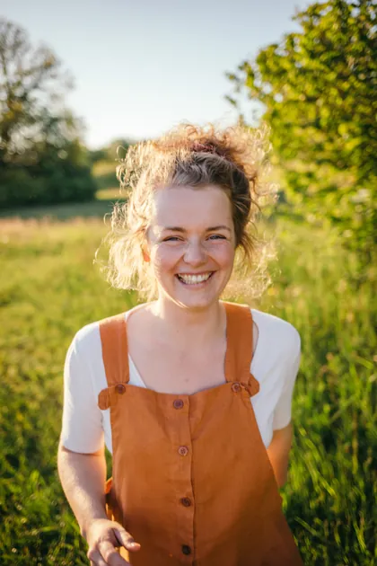

Es gibt kaum einen dankbareren Monat, um in die Wildkräuterküche zu starten, als den Mai. Zwischen Gartenzaun und Waldrand steht das erste zarte Grün in voller Frische — mild, saftig und noch nicht von der Sommerhitze bitter geworden. Du brauchst dafür weder einen Garten noch eine Ausrüstung, nur wache Augen, ein Körbchen und die Bereitschaft, langsam hinzusehen.
Warum der Mai ideal ist
Im Mai treiben die meisten Wildkräuter frisch aus. Die jungen Blätter sind zart, aromatisch und besonders bekömmlich — ganz anders als später im Jahr, wenn viele Pflanzen ins Kraut schießen und herber werden. Gleichzeitig sind die Bestände so üppig, dass ein achtsames Ernten von wenigen Blättern der Natur nichts nimmt. Und weil viele dieser Kräuter direkt am Wegrand, im Halbschatten des Gartens oder am Wiesensaum stehen, brauchst du für den Anfang gar nicht weit zu gehen. Ein perfekter Zeitpunkt also, um die ersten Pflanzenfreundschaften zu schließen.
Sechs essbare Wildkräuter für den Anfang
Ich stelle dir hier bewusst häufige, leicht zu findende Arten vor. Nimm dir für jede Zeit, bis du sie wirklich sicher wiedererkennst:
- Giersch — Der „Gärtnerschreck" ist ein wunderbares Wildgemüse. Erkennungszeichen: Der Blattstiel ist im Querschnitt dreikantig, und die Regel lautet „drei-mal-drei" (dreigeteiltes Blatt, jeder Teil noch einmal dreiteilig). Schmeckt jung wie eine Mischung aus Petersilie und Möhre — herrlich in Salat, Pesto oder Suppe.
- Gundermann — Ein kriechender Lippenblütler mit kleinen, rundlich-gekerbten Blättern und blauvioletten Blüten; der Stängel ist vierkantig. Sein würzig-herber, leicht harziger Geschmack ist intensiv — sparsam über Kartoffeln, in Kräuterbutter oder als Deko-Note im Nachtisch.
- Spitzwegerich — Die schmalen, längs von Blattadern durchzogenen Blätter wachsen in einer bodenständigen Rosette. Junge Blätter schmecken pilzig-champignonartig; die noch geschlossenen Blütenknospen sind angebraten eine kleine Delikatesse.
- Vogelmiere — Ein zarter, kriechender Teppich mit kleinen weißen Sternblüten. Ihr sicheres Kennzeichen: eine feine Haarlinie, die außen am Stängel entlangläuft und die Seite wechselt. Mild und frisch wie junger Mais — ideal roh im Salat oder aufs Butterbrot.
- Gänseblümchen — Das kennt jedes Kind, und genau das macht es zum perfekten Einstieg. Blüten und junge Blätter sind essbar, schmecken nussig-mild und schmücken jeden Salat und jedes Butterbrot.
- Brennnessel — Das nährstoffreiche Kraftpaket schlechthin. Mit Handschuhen pflücken, dann durch kurzes Überbrühen, Anbraten oder Pürieren die Brennhaare unschädlich machen. Aus jungen Triebspitzen werden Spinat, Suppe oder Pesto.
Wasch die gesammelten Kräuter zu Hause vorsichtig und verarbeite sie möglichst frisch — roh im Salat, fein gehackt in Quark und Kräuterbutter oder als leuchtend grünes Wildpesto. So schmeckst du am besten heraus, wie unterschiedlich und lebendig jede einzelne Pflanze ist.
Sammelregeln — mit Respekt und Maß
Wildsammeln ist ein Geben und Nehmen. Ein paar Regeln haben sich über Generationen bewährt, und sie liegen mir sehr am Herzen:
- Sammle nur, was du sicher kennst. Diese eine Regel steht über allem. Bist du dir nicht zu hundert Prozent sicher, lass die Pflanze stehen.
- Nur an sauberen Orten. Nicht an viel befahrenen Straßen, an Hundeecken, Ackerrändern oder gedüngten Wiesen.
- Nimm nur wenig. Ein Drittel eines Bestandes ist eine gute Faustregel — lass genug für Tiere, Insekten und die Pflanze selbst.
- Geschützte Arten bleiben stehen. Erntest du in der freien Natur, gilt Handstrauß-Maß für den Eigenbedarf; seltene und geschützte Pflanzen rührst du grundsätzlich nicht an.
Verwechslungsgefahren — ehrlich benannt
Der Mai ist wunderbar, aber er verlangt auch Wachheit. Einige der gefährlichsten Verwechslungen des Jahres fallen genau in diese Zeit:
- Bärlauch, Maiglöckchen & Herbstzeitlose — Der aromatische Bärlauch wird immer wieder mit den giftigen Blättern von Maiglöckchen und Herbstzeitloser verwechselt. Bärlauch riecht deutlich nach Knoblauch (Achtung: der Geruch bleibt an den Fingern und täuscht bei der nächsten Pflanze!) und hat je einen einzelnen, matten Blattstiel aus dem Boden. Im Zweifel gilt hier ganz besonders: stehen lassen.
Möchtest du auch dem Räuchern mit heimischen Pflanzen begegnen? Dann lies weiter im Beitrag Beifuß räuchern — Anleitung & Brauchtum.
